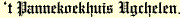

HomeGevraagd: nog enkele nette scholieren voor zowel keuken als bediening. Interesse? Stuur nu een mailtje of bel ons. Welkom op de website van 
Al 32 jaar dé plek voor een heerlijke ambachtelijk gebakken pannenkoek voor ouderwetse prijzen!
Ons sfeervolle restaurant is gelegen in een bosrijke omgeving midden op de Veluwe waar diverse wandel- en fietsroutes mogelijk zijn.
Ook een bezoekje aan de Ugchelse Boswachterij, de Koppelsprengen, de schaapskudde op
de Hoogbuurlose heide of de bekende apeldoornse attracties, zijn zeer goed te combineren met een bezoek aan ons pannenkoekrestaurant. |


|
|
Onze menukaart is zeer uitgebreid met een keuze uit meer dan 180 verschillende pannenkoeken.
Wilt u een eenvoudige pannenkoek of misschien een geflambeerde pannenkoek?
Bij ons is alles mogelijk, want door de vele verschillende soorten is er keuze voor iedereen, zoet, hartig of zelfs vegetarisch. is landelijk erkend. Tevens een oplaadplek voor uw elektrische fiets. |
|
|
|
|
't Pannekoekhuis Ugchelen - Fam. Oldenburg - Hoenderloseweg 50 - 7339 EJ Ugchelen - Tel.: 055 541 82 11